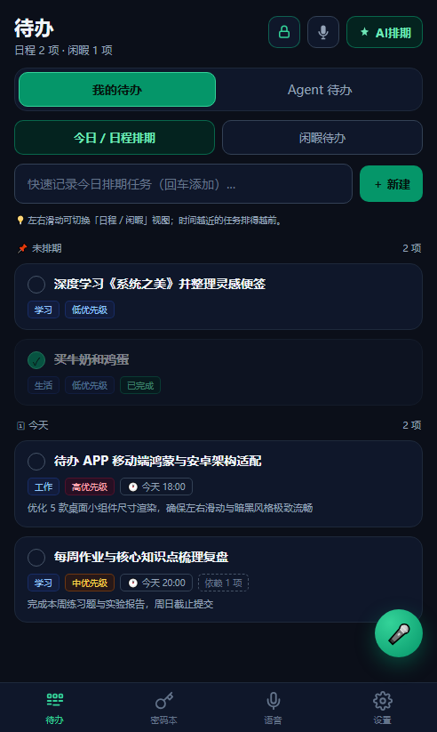
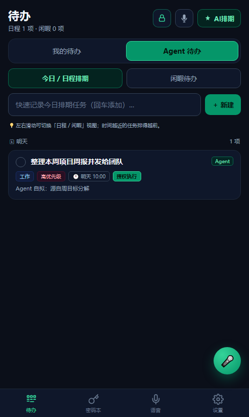
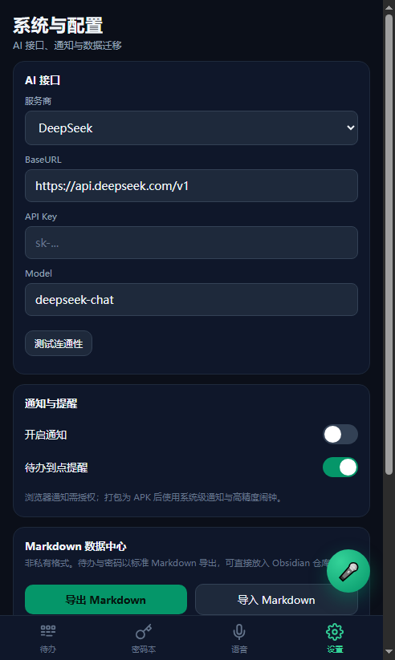

白泽文档
白泽是一个全 Go 的跨端个人智能体：NAS 上的后端是唯一大脑，Windows 桌面端与 Android 手机端注册成设备当手脚。 这份文档从「它是什么」讲到「怎么把它跑起来」，再到每一块控制面板背后的机制。
项目介绍
白泽解决的是一个很具体的问题：你有一台常年开机的 NAS、一台天天在用的 Windows 电脑、一部随身带的手机—— 但你没有一个「记得住事、能在三个设备之间自己流转」的助手。
所以白泽把职责拆成两层：NAS 后端是唯一大脑，所有智能体逻辑、长期记忆、模型路由、审批闸门都跑在那里； 桌面端和手机端是它的手脚，注册成设备、上报能力清单、接收指令、执行动作。
快速开始
三条路径，按你要装的东西选。最先装的应该是 NAS 后端——没有它，两个端连不上。
1 · 部署 NAS 后端
在仓库根目录建一个 deploy.local.env（模板见 deploy.local.env.example），
填 NAS 地址、用户名、密码和配对令牌。然后一条命令跑完剩下的：
# 构建 linux/amd64 → 上传 NAS → NAS 打镜像 → 起容器 → 健康检查 powershell -ExecutionPolicy Bypass -File tools\deploy-nas.ps1 # 健康检查不通过会自动回滚到原来的 systemd 服务，不会把后端留在死状态
后端默认监听 http://<NAS>:8787。首次启动会自动创建 admin 账号，
口令写在数据目录的 admin-password.txt 里。
2 · 装 Windows 桌面端
# 构建（纯 ASCII 脚本，无 cgo / 无 Rust） powershell -ExecutionPolicy Bypass -File desktop\build.ps1 # 首次运行，指定后端地址和配对令牌 desktop\bin\baize-desktop.exe --server http://<NAS>:8787 --token <令牌> # 之后直接双击 exe（配置保存在 %APPDATA%\白泽\desktop.json） # 要打安装包 powershell -ExecutionPolicy Bypass -File desktop\build-installer.ps1
3 · 装 Android 手机端
# 两步合一：先交叉编译 Go 内核（arm64），再打 APK powershell -ExecutionPolicy Bypass -File android-app\build.ps1 # 安装到设备 adb connect <手机IP>:5555 adb install -r android-app\bz-todo-v<版本>.apk
部署前检查清单
| 需要 | 说明 |
|---|---|
| NAS 能 SSH | 部署脚本通过 tools/sshrun 连过去打镜像 |
| NAS 上有 Docker | 镜像在 NAS 本地构建，电脑端不需要 Docker |
deploy.local.env | 已在 .gitignore 里，密码不会进仓库 |
| 可选：基础镜像 | 默认用 daocloud 镜像；可用 BAIZE_BASE_IMAGE 覆盖 |
架构总览
三端之间只有一条通信路径：WebSocket + HTTP，全部由后端发起编排。端与端之间不直连。
┌──────────────────────────────────────┐
│ NAS 后端（唯一大脑，Docker） │
│ 设备中枢 / 任务与审批 / Agent / 记忆 │
│ 知识库 / MCP / 技能 / 备份 / 定时任务 │
└──────┬────────────────────┬──────────┘
WebSocket+HTTP WebSocket+HTTP
┌──────┴──────┐ ┌──────┴──────────┐
│ Windows 桌面端 │ │ Android 手机端 │
│ Go + WebView2 │ │ Go 内核 + WebView │
└───────────────┘ └───────────────────┘
仓库结构
| 目录 | 说明 |
|---|---|
agent/ | 后端 Agent：设备中枢、任务与审批、Agent 循环、记忆、知识库、MCP、技能、备份、定时任务 |
shared/ | 跨端共享契约：消息定义（proto）+ 设备客户端 |
core/ | 共享领域内核 + 手机端 Go 内核（cmd/bzcore） |
desktop/ | Windows 桌面端（Go + 纯 Go WebView2） |
android-app/ | 手机壳（Java，不打 Gradle）+ 打包脚本 |
todo-app/ | 手机端 WebView 前端（原生 HTML/CSS/JS） |
cli/ | 电脑端小工具 bz |
tools/ | 部署与运维（deploy-nas.ps1、sshrun） |
功能演示
下面是桌面端与手机端的真实界面截图（暗色主题）。




NAS 后端
后端是唯一跑智能体逻辑的地方。它负责设备注册与心跳、任务分解与派发、审批闸门、记忆读写、知识库索引、 模型路由、插件与工具调用、定时任务调度。
运行形态
- Docker 单容器，镜像在 NAS 本地从上传的 linux/amd64 二进制构建
- 默认端口
8787，健康检查走/api/health - 数据目录默认
/vol1/@appdata/baize，SQLite 存正本 - 与旧的 systemd 服务互斥：先停止、容器健康后才 disable，失败自动回滚
常用参数
powershell -ExecutionPolicy Bypass -File tools\deploy-nas.ps1 -SkipBuild # 跳过编译，直接上传现有二进制 powershell -ExecutionPolicy Bypass -File tools\deploy-nas.ps1 -NoRestart # 只上传/构建，不动运行中的容器 powershell -ExecutionPolicy Bypass -File tools\deploy-nas.ps1 -Tag v0.9.35 # 给镜像打版本标签 powershell -ExecutionPolicy Bypass -File tools\deploy-nas.ps1 -Push # 推送到 ghcr.io（需先在 NAS 上 docker login）
Windows 桌面端
Go + 纯 Go WebView2 实现，无 cgo、无 Rust。单文件约 8 MB，用户级安装（不需要管理员）。
桌面控制的三档权限
| 档位 | 能力 | 风险 |
|---|---|---|
| 关闭 / 只读 | 默认档。只读指定目录，不可写不可删 | 低 |
| 只读指定盘 | 放开指定盘符的读取范围 | 中 |
| 完全访问 | 不限定范围，可写可删 | 高，建议先备份再开 |
「允许执行命令」的三重闸门
这是第 2 档高危能力，默认关闭，打开需要过风险确认 + 二次确认弹窗。三重闸门缺一不可，且都在本机判定：
- 本机开关：不开，
sys.exec这条能力根本不上报给后端，后端也就派不过来 - 命令白名单：命令名（去路径、去
.exe/.cmd/.bat、小写）必须在清单里；空清单 = 一条都不许跑；拒绝管道、重定向、串联、命令替换（; | & ` $ > <换行） - 后端人工审批：
sys.exec属危险动作，每次派下来都要点「批准并执行」
执行侧还有护栏：单次超时默认 60 秒（上限 300 秒），输出上限 256KB，超时自动终止并写明原因。
Android 手机端
Go 内核编译成静态库 + Java 前台服务常驻。前端是原生 HTML/CSS/JS 的 WebView 页面，不打 Gradle。
- ADB + 无障碍双通道并行：能走 ADB 的走 ADB，需要界面语义的走无障碍
- UI 自动化 Copilot：读屏、定位控件、模拟操作，可以跨 App 完成任务
- 24 小时监听与回溯：前台服务常驻，掉线自动重连
- 四个标签页：待办 / 密码本 / 语音 / 设置
- 密码本：明文只驻设备内存，不送云端模型
常见坑
- 三星 / 小米等激进 ROM 需要在系统设置里允许「自启动」「后台运行」，否则服务被杀
- ADB 通道需要先
adb connect <手机IP>:5555并授权 - 无障碍通道需要在系统设置里手动开启对应服务
控制台
桌面端的主界面就是一个控制台，左侧固定导航，右侧按功能切换。
| 入口 | 作用 |
|---|---|
| 对话 | 向白泽下达指令，查看运行状态与执行过程 |
| 设备 | 已注册端列表、在线状态、能力清单 |
| 任务与审批 | 进行中 / 已完成任务，待审批的危险动作 |
| 知识库 | Markdown 笔记，可导入导出，Obsidian 兼容 |
| 记忆星图 | 双向链接 + 语义连边可视化 |
| 活动追踪 | 后端执行过的动作流水 |
| 账号与共享 | 多用户与共享资源 |
| 冲突协商 | 多端同时操作时的冲突处理 |
| 模型通道 | 模型服务商、BaseURL、模型名与路由 |
| MCP 服务 / 技能 | 外部工具与技能的热插拔管理 |
| 插件市场 | 板块 / 阶段 / 分类三维货架 |
| 人设 | 智能体的人设与行为预设 |
| 定时任务 | Cron 表达式与执行记录 |
| 频道 | 外部消息入口与出站 Webhook |
频道配置
频道是「外部消息变成一条任务」的入口，也是「任务结果发出去」的出口。
支持的频道
| 频道 | 方向 | 协议 |
|---|---|---|
| Webhook | 出站 | POST 到指定 URL |
| QQ OneBot | 入站 | 反向 WebSocket V11 |
| 飞书 | 入站 | 事件回调 / 长轮询 |
| 钉钉 | 入站 | Stream 长连接 |
| 腾讯元宝 | 入站 | protobuf over WebSocket |
| 个人微信 | 入站 | 二维码登录 + 长轮询 |
配置步骤
- 在控制台打开「频道」页，点「新建」
- 填频道 ID（字母 / 数字 /
-/_）和类型 - 填入口地址或凭据；口令留空表示不修改
- 点「测试发送」验证连通性，再启用
模型通道
模型通道决定白泽用哪个模型服务。支持 OpenAI 兼容协议，填 BaseURL + API Key + 模型名即可。
| 字段 | 示例 |
|---|---|
| 服务商 | DeepSeek / OpenAI / 本地推理服务… |
| BaseURL | https://api.deepseek.com/v1 |
| API Key | sk-…（加密存储） |
| Model | deepseek-chat |
配好后点「测试连通性」，通过即生效。多通道时可以按任务类型路由到不同模型。
MCP 与技能
MCP 服务给白泽接外部工具（文件系统、浏览器、数据库…），技能是可复用的任务模板。 两者都是热插拔：装上即生效，不需要重启后端。
- 技能可自定义扩展，内置一份官方源，离线也能用
- 插件市场按 板块 / 阶段 / 分类 三维组织
- 所有工具调用都受审批闸门约束，危险前缀的动作强制人工确认
定时任务
按 Cron 表达式在后端调度，触发后走与手动对话完全相同的任务链路——同样审批、同样落记忆。
# 示例：每天早上 8 点汇总昨日任务 0 8 * * * # 示例：每 30 分钟检查一次 NAS 磁盘占用 */30 * * * *
执行记录会写进活动追踪，失败可在「任务与审批」里看到原因。
长期记忆
记忆不是把所有历史塞进上下文，而是「先检索、再召回、最后进提示词」。
四路混合检索
召回三闸门
- 相关性：分数低于阈值的不进上下文
- 时效性：过期的事实降权
- 多样性：避免同一条记忆的多个副本占满窗口
agent/internal/memory 是基于 GPL-3.0 项目 OpenHuman 的实现用 Go 重写的衍生作品，按 GPL-3.0 授权。知识库与记忆星图
知识库是 Markdown 笔记的集合，双向链接语法与 Obsidian 兼容。 记忆星图把「手工双链」和「语义自动连边」画在同一张图上：
- 实线 = 你手工写的双向链接
- 虚线 = 系统根据语义相似度自动连的边
- 力导向布局，节点按连接度分布
笔记可以整体导出为 .md，也可以从已有 Markdown 仓库导入。
任务与审批
任务分两种来源：你主动下的指令，和定时任务 / 频道消息触发的任务。两种都走同一条链路。
任务生命周期
收到指令 → 分解子任务 → 选端（按能力清单） → 派发
→ 端执行 → 回执 → 落记忆 → 通知你
危险动作前缀
以删除、提权、发消息、改权限等前缀开头的动作，会被强制拦下等人确认。确认时有两种选择：
- 本次放行：只放过这一次
- 永远放行：记住这个动作模式，之后同类不再询问（谨慎使用）
人设与多智能体
每个智能体有独立的人设、配置、记忆与技能。默认只有一个人设，需要时可以创建多个， 各自负责不同领域（工作 / 生活 / 运维…）。
- 人设影响语气、默认行为边界与工具偏好
- 多智能体之间可以通过协作技能互相通信、共同完成复杂任务
- 每个智能体的记忆是隔离的，不会互相污染
常见问题
后端起来了但端连不上？
先确认 NAS 的 8787 端口在内网可达，再检查配对令牌是否正确、设备是否已在「设备」页注册。
第一次的 admin 口令在哪？
在 NAS 的数据目录里，文件名是 admin-password.txt。
部署失败了后端会挂吗？
不会。部署脚本的健康检查不通过会自动回滚到原来的 systemd 服务。
手机端老是掉线？
多半是系统把前台服务杀了。去系统设置里允许「自启动」和「后台运行」，并把电池策略改成「不限制」。
下载链接是最新的吗？
是。官网的下载菜单每次打开都从 GitHub Releases API 拉最新版本，发新版后不需要改网页。
许可与安全
许可
- 主体：MIT
- 例外：
agent/internal/memory与agent/internal/voice为 GPL-3.0 - 第三方依赖清单见 THIRD-PARTY-NOTICES.md
风险声明
- 高权限意味着高风险。「只读指定盘」与「完全访问」会显著扩大智能体可触达的范围，放开前请备份。
- 智能体不可靠。大模型可能误解指令、产生幻觉或误操作，造成误删、误改、数据泄露。
- 后果自负。自行放开权限、部署与使用本软件产生的一切后果由你本人承担。
- 无担保。本软件按「现状」提供，不附带任何明示或默示担保。
- 危险动作默认强制人工审批，但审批闸门只降低风险，不能消除风险。